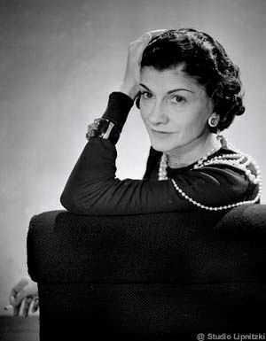

Gabrielle Chasnel, dite « Coco Chanel », est une créatrice de mode, modiste et grande couturière française, née le 19 août 1883 à Saumur et morte le 10 janvier 1971 à l'hôtel Ritz de Paris. Célèbre pour ses créations de haute couture, ainsi que pour les parfums portant son nom, elle est à l'origine de la maison Chanel, « symbole de l'élégance française »4. Certains choix de vie de Coco Chanel sont à l'origine de controverses, en particulier son comportement et ses fréquentations pendant l'Occupation.
